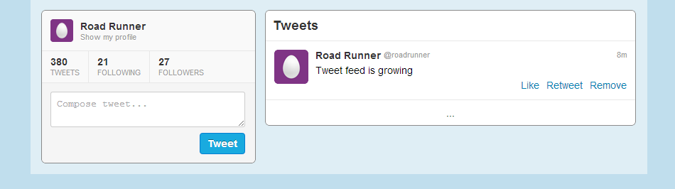

Tutorial. Part 6. Collection bindings
Source: https://github.com/enepomnyaschih/mt/tree/mt-2.3-6 (Git branch).
Now we switch to the most wonderful and important part of jWidget which makes it special - it is collection bindings. In this tutorial, we add a feature of a new tweet posting and an existing tweet removal.
Let's start with a bit of refactoring. Remember how we bind Like/Unlike buttons in view to properties in the model? We will use a similar approach to bind the tweet feed to the application data model. The model will dispatch all kinds of tweet collection modification messages and the view will handle them appropriately. The easiest way to make it possible is to replace tweet array with a BindableArray in ApplicationData class.
src/model/ApplicationData.ts
import BindableArray from "jwidget/BindableArray"; import IBindableArray from "jwidget/IBindableArray"; import Profile from "./Profile"; import Tweet from "./Tweet"; export default class ApplicationData { readonly tweets: IBindableArray<Tweet>; constructor(readonly profile: Profile, tweets: Tweet[] = []) { this.tweets = new BindableArray(tweets); } static createByJson(json: any) { return new ApplicationData(json.profile, (<any[]>json.tweets || []).map(Tweet.createByJson)); } }
BindableArray dispatches all kinds of messages necessary to notify the view about its modification. We could subscribe to these events and handle them manually by updating the corresponding tweet view array. However, it would be too much time consuming and difficult. Instead, we are going to apply startMappingArray synchronizer to synchronize the view array with the model array.
src/view/TweetFeed.ts
import {destroy} from "jwidget";
import Component from "jwidget/Component";
import {startMappingArray} from "jwidget/collection/ArrayMapper";
import ReadonlyBindableArray from "jwidget/ReadonlyBindableArray";
import template from "jwidget/template";
import Tweet from "../model/Tweet";
import TweetView from "./TweetView";
@template(require("./TweetFeed.jw.html"))
export default class TweetFeed extends Component {
constructor(private tweets: ReadonlyBindableArray<Tweet>) {
super();
}
protected renderTweets() {
return this.own(startMappingArray(this.tweets, tweet => new TweetView(tweet), {destroy}));
}
}
Now the view array is created from the model via array item convertion function startMappingArray. It returns an array of tweet views. It works better here than usual this.tweets.native.map(...) method for the following two reasons.
First, it subscribes itself to all source array modification messages and synchronizes the target array with the source array each time the modification happens. This is an example of jWidget 2 data binding mechanism. Please notice that startMappingArray can be used to map not just a model to a view, but also a model to another model and a view to another view. This is an advantage of jWidget 2 over the other frontend frameworks. This is a very flexible and transparent solution.
Second, it controls life time of the mapped items. Pay attention to the own method call. The array destruction unbinds it from the model, which allows the browser to release the memory and prevent an unintended handling of the array modification. Also, we pass destroy argument to startMappingArray method - it instructs the synchronizer to destroy tweet views when they are not needed anymore, i.e. once the corresponding tweets get removed from the model or once the entire target collection gets destroyed.
The refactoring is done, and you can run the application in your browser to make sure that it works as before. Now, let's utilize the BindableArray to handle tweet creation. Bind ProfileBox to jQuery "submit" event.
src/view/ProfileBox.ts
constructor(private data: ApplicationData) {
super();
}
get profile() {
return this.data.profile;
}
protected renderComposeForm(el: JQuery) {
el.on("submit", event => {
event.preventDefault();
const text = <string>this.getElement("compose-input").val();
if (!text) {
return;
}
this.data.tweets.add(new Tweet({
fullName: this.profile.fullName,
shortName: this.profile.shortName,
avatarUrl48: this.profile.avatarUrl48,
contentHtml: text,
time: new Date().getTime(),
like: false,
retweet: false
}), 0);
this.getElement("compose-input").val("");
});
}
And we must now pass ApplicationData to ProfileBox instead of just Profile.
src/view/Application.ts
protected renderProfileBox() {
return this.own(new ProfileBox(this.data));
}
That's it! Run the application in a browser. After a text input and a "Tweet" button click, you'll see a new tweet in the tweet feed:


Our next goal is to activate Remove button in tweets to remove them from the feed. Let's bind a handler to the button click. We need to pass the ApplicationData all the way to the TweetView.
src/view/Application.ts
protected renderTweets() {
return this.own(new TweetFeed(this.data));
}
src/view/TweetFeed.ts
constructor(private data: ApplicationData) {
super();
}
protected renderTweets() {
return this.own(startMappingArray(this.data.tweets, tweet => new TweetView(this.data, tweet), {destroy}));
}
src/view/TweetView.ts
constructor(private data: ApplicationData, private tweet: Tweet) {
super();
}
protected renderRemove(el: JQuery) {
el.on("click", event => {
event.preventDefault();
this.data.tweets.removeValues([this.tweet]);
});
}
Run application and try to click Remove button in a tweet.
In this tutorial we've reviewed a typical scenario of an array item converter (startMappingArray) usage, but you shouldn't stop at this. You should try other collection bindings, because there are reasonable use cases for all of them. Find them in Documentation root, Collection bindings section.
Notice that binding usage is not constrained by view only. For example, you may create a SetIndexer in your model just to speed-up access to BindableSet values by some key. SetSorter can sort a BindableSet of tweets by their publication date, and you won't need to think about a position to insert a new tweet at. There is a lot of scenarios, and I recommend you trying them in practice.
This part concludes the jWidget tutorial series. Thank you for your attention, and we hope that you'll find jWidget very useful for your everyday frontend development work! Feel free to share your feedback and report issues in GitHub.